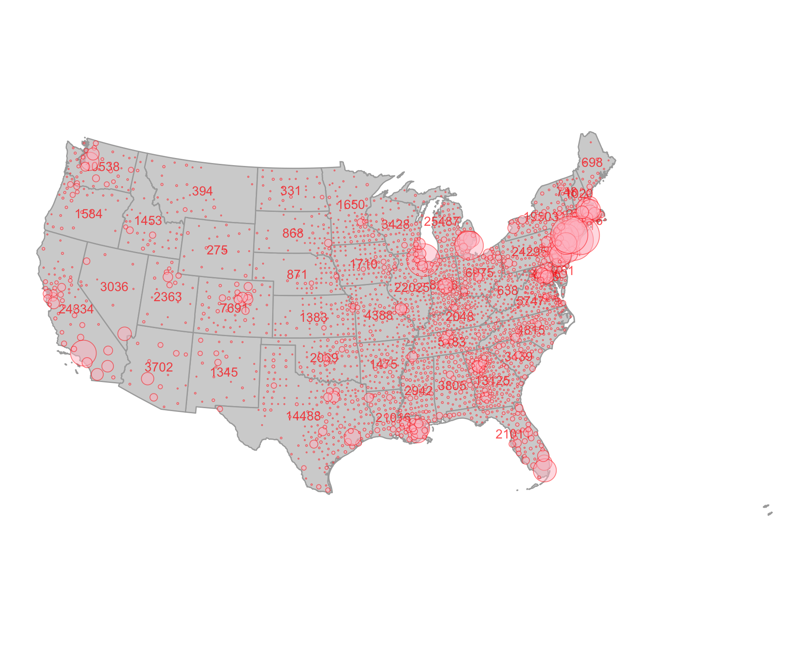

The NY Times has been making an amazing infographic of Covid-19 cases. With the data from this package, we should be able to more or less recreate it. Let’s do it for the lower 48 (moving Hawaii and Alaska is a pain!)
We’ll start by loading the coronavirus data at the county and state level
require(covid19nytimes)
require(dplyr)
covid19nytimes_states <- refresh_covid19nytimes_states()
covid19nytimes_counties <- refresh_covid19nytimes_counties()Next, we need some county maps and state maps. For this, we’ll use the excellent USAboundaries package. We want the centroid of counties for bubble placement.
require(sf)
require(USAboundaries)
county_map <- us_counties() %>%
st_centroid()
state_map <- us_states()OK, let’s filter to the lower 48 for all data sets
filter_out <- c("Alaska", "Hawaii", "Guam", "Puerto Rico")
covid19nytimes_states <- covid19nytimes_states %>%
filter(!(location %in% filter_out)) %>%
filter(location != "Unknown")
covid19nytimes_counties <- covid19nytimes_counties %>%
filter(purrr::map_dbl(location, ~stringr::str_detect(., filter_out) %>% sum)==0) %>%
filter(location != "Unknown")
county_map <- county_map %>%
filter(!(state_name %in% filter_out))
state_map <- state_map %>%
filter(!(name %in% filter_out))For text labels, we use centroids of states joined with maximum number of case numbers.
state_num_centroids <- covid19nytimes_states %>%
filter(date == max(date)) %>%
filter(data_type == "cases_total") %>%
left_join(state_map,
by = c("location_standardized" = "geoid")) %>%
st_as_sf(crs = st_crs(state_map)) %>%
st_centroid()Now, we join the county data and the county centroid map and filter to the last date in the data set.
joined_covid_counties <- covid19nytimes_counties %>%
filter(date == max(date)) %>%
filter(data_type == "cases_total") %>%
left_join(county_map,
by = c("location_standardized" = "geoid")) %>%
st_as_sf(crs = st_crs(county_map))Last, let’s make the plot!
require(ggplot2)
#> Loading required package: ggplot2
ggplot() +
geom_sf(data = state_map, fill = "lightgrey", color = "darkgrey") +
geom_sf_text(data = state_num_centroids, aes(label = value), color = "red",
size = 4, alpha = 0.7) +
geom_sf(data = joined_covid_counties,
mapping = aes(size = value),
shape = 21, alpha = 0.5, color = "red", fill = "pink") +
theme_void() +
scale_size_continuous(guide= "none",
range = c(0.05, 35)) +
coord_sf(crs = st_crs(2163)) #for that nice equal area curved look